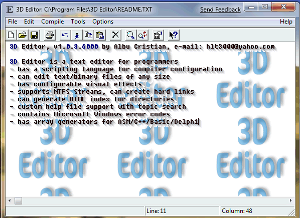

3D Editor este un editor de text pentru programatori - poate încãrca fiºiere text/binare de orice mãrime - are efecte vizuale configurabile - suportã stream-uri în NTFS - poate genera un index HTML ce conþine structura unui director - configurarea unui compilator se face cu ajutorul unui script - suportã fiºiere help definite de utilizator - conþine codurile de eroare Microsoft Windows - poate genera matrici pentru ASM/C++/Basic/Delphi
Actualizat: Marþi, 9 Septembrie, 2003
| Nume fiºier | Mãrime | Actualizat | Descriere |
| [Config] | <DIR> | 9/10/2003, 21:48 | Exemple de configurare pentru 3D Editor |
| [SCRIPTS] | <DIR> | 9/9/2003, 4:16 | Exemple de configuraþii pentru asambloarele TASM ºi MASM |
| 3dedit100.zip | 47.023 | 5/9/2003, 5:36 | 3D Editor, versiunea 1.00 |
| 3dedit101.zip | 51.884 | 5/15/2003, 10:23 | 3D Editor, versiunea 1.01 |
| 3dedit102.zip | 146.403 | 9/10/2003, 19:58 | 3D Editor, versiunea 1.02 |
| 3DEdit.jpg | 54.525 | 9/10/2003, 21:22 |  |
| FILES.TXT | 398 | 9/9/2003, 3:54 | |
| readme.pdf | 27.868 | 1/26/2003, 10:38 | Informaþii despre program, format PDF |
| README.TXT | 466 | 9/9/2003, 4:3 | Informaþii despre program |
| COM2BAT.ZIP | 2.882 | 4/22/2000, 9:56 | Program de conversie |
| COMCRYPT.ZIP | 2.009 | 8/12/2000, 18:46 | Program ce cripteazã fiºiere .com |
| DOSLOG.ZIP | 22.613 | 5/14/1999, 8:10 | Program ce urmãreºte folosirea funcþiilor Ms-DOS |
| FE.ZIP | 72.220 | 4/22/2000, 10:8 | Editor de font-uri |
| GETFONT.ZIP | 6.360 | 4/22/2000, 10:10 | Program ce capteazã font-uri |
| ME.ZIP | 22.615 | 12/25/2000, 18:37 | Emulator ºi driver de mouse |
| W2.ZIP | 81.161 | 8/12/2000, 16:44 | Joc logic |
| W3.ZIP | 137.549 | 5/19/2003, 5:7 | Joc de aventurã |
15 fiºiere ºi 2 directoare
totalizând 698179 bytes.